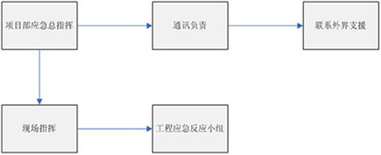

建筑起重机械生产安全事故应急救援预案
第一章、编制依据与工程项目概况
一、编制依据
1、《建筑法》
2、《安全生产法》
3、《关于特大安全事故行政责任追究的规定》
4、《福建省安全生产条例》
5、《特种设备安全监察条例》
6、《建筑起重机械安全监督管理规定》（建设部令第166号）
7、其它法律、法规。
二、工程规模和建筑起重机械概况
（一）工程规模
拟建设 （项目名称名称名称） 一幢
（二）建筑起重机械概况
根据本工程主体工程量和装饰工程量的大小，本工程拟设置一台 （设备名称） ，屋面高度为 （建筑高度） 米， （设备名称） 设计安装总高度为 （安装高度） 米。
第二章 编制目的
为加强对起重机安全事故的防范，及时做好安全事故发生后的救援处置工作，最大限度地减少事故造成的损失，维护正常的社会秩序和工作秩序，根据《特种设备安全监察条例》的要求，结合本工程实际，特制定本单位起重机安全事故应急救援预案。
第三章 预案的适用范围
本预案所称安全事故，是指在本工程起重机使用中发生的，造成或可能造成人身安全和财物损失的事故，事故类别包括：
1、因检查维修出现问题而造成事故。
2、操作不当；违章违纪蛮干，不良操作习惯；判断操作失误，指挥信号不明确，安全意识差和操作技能低下是引发的事故。
第四章 应急救援指挥机构的设置
（一）指挥机构的设置和职责
1、指挥机构的设置
项目部成立施工现场安全生产事故应急救援指挥领导小组，组长由项目经理担任，副组长为项目副经理担任，成员由技术负责人、安全员、施工员等各承包组组长等人员组成。

现场指挥：项目部项目经理
工程应急反应小组：项目部管理人员、各班组长成员、义务消防队成员通讯负责人。
2、指挥机构的职责
在应急情况下，值班人员组成最初应急组织。值班主管一旦发现或接到紧急情况通知，应马上确定应急级别，报告现场指挥或应急总指挥，调动应急反应小组。在此阶段的指挥和控制通过现场指挥中心来执行，作为应急指挥中心，根据应急总指挥（项目经理）的指示，及时通报公司管理层或指挥联络外界。事故发生初期，先由值班主管担任初期应急岗位指挥，直到按应急预案规定的负责人到岗位后再交接岗位，正式启动应急预案。
（二）项目应急救援小组名单
| 序号 | 姓名 | 职务 | 应急救援职务 | 电话 |
| 1 | 张斌 | 项目经理 | 现场应急救援总指挥 | 5133777 |
| 2 | 蔡盛斌 | 技术负责人 | 应急救援现场指挥 | 18705993777 |
| 3 | 金文春 | 安全员 | 应急救援物资主管 | 13905996661 |
| 4 | 宋福钦 | 施工队长 | 应急救援营救 | 13950666578 |
（三）应急救援专业队伍任务
（1）事故发生后立即组织营救受害人员，组织撤离或者采取其他措施保护危害区域内的其他人员。抢救受害人是应急救援的首要任务，在应急救援行动中，要求做到快速、有序、有效地实施现场急救与安全转送伤员降低伤率，减少事故的损失。
（2）指导群众防护，防止事态发展，组织群众安全撤离现场。
（3）迅速控制危险源，对事故造成的危害进行监测、测定事故危害区域、危害性质及危害程度。
（4）查清事故原因，查明人员伤亡情况，协助公司等上级部门对事故调查。
（5）做好现场清洁，减少、消除事故灾痕。
第五章 应急救援报警和联络方式
根据事故规模危害程度紧急情况确定报警方式，包括城市公用特殊通讯电话：报警110；火警119；急救120；交警122；气象站121。
项目部应急救援通讯网络包括本工程应急办公电话: （应急办公电话） ，明确联络方式：应急救援联络方式有：
（1）电话；
（2）应急机构人员手机；
（3）场内广播。
第六章 事故的紧急处置措施
事故处理程序：
发现事故→发出警报→尽快切断电源→救治伤者→通知应急小组→排除险情→查明原因→处理善后
1、一旦事故发生，不论事故现场何种情况，发现事故人员必须第一时间发出警报（大声呼叫），由机械操作人员切断电源，通知周边作业人员全部停止作业，撤离到安全地带。并用手机通知项目应急总指挥和联络员。
2、应急总指挥接到事故报告后，应立即召集应急机构人员，带齐必要工具，到事故现场集中。
3、应急救援人员集中后，应全面听从应急总指挥的安排，合理分工，一方面排除险情，一方面组织救援人员对伤员实施救护，并根据伤情，实施救治或转送医院（武夷山市市立医院）。
4、险情排除，人员得到有效救护后，应组织对事故进行调查，按事故处理“四不放过”原则进行处理，并按事故类别上报上级相关部门。
第七章 应急保障条件
1、抢险队伍
项目部由项目管理人员组成应急救援小组，由项目经理任总指挥。
2、应急救援装备
项目部应急救援装备包括值班电话、报警电话、灭火器材、消防斧、防毒面具、紧急照明灯具、应急药箱及担架等。
3、应急救援药品
外用药品：通常有双氧水、雷佛奴尔水、红药水、碘酒、消毒棉签、药棉、纱布、胶布、绷带、创可贴、跌打万花油、眼膏、碘胺结晶、烫火膏、清凉油或驱风油、三角巾、急救包等。
4、内服药品：人丹、十滴水、保济丸或藿香正气丸、一般退烧药品等。
第八章 应急救援措施
1、工作原则
事故发生后，救援工作应有序进行，重、特大事故应急救援工作遵循“保护人员安全优先，防止和控制事故蔓延、扩大为主；统一领导指挥、人员分工、分级负责、综合协调、快速高效、现场自救与上级或社会救援相结合”的原则。
人员急救步骤：急救是对伤员提供紧急的监护和救治，给伤员最大的生存机会，急救一定要遵循下述四个步骤：
（1）调查事故现场，调查时要确保对调查人、伤病员或其他人无任何危险，迅速使伤病员脱离危险场所，尤其在工地、工厂大型事故现场，更是如此。
（2）初步检查伤病员，判断其神志、气管、呼吸循环是否有问题，必要时立即进行现场急救和监护，使伤病员保持呼吸道通畅，视情况采取有效的止血、防止休克、包扎伤口、固定、保存好断离的器官或组织、预防感染、止痛等措施。
（3）呼救，应请人去呼叫救护车，你可继续施救，一直要坚持到救护人员或其他施救者到达现场接替为止。此时还应反映伤病员的伤病情和简单的救治过程。
（4）如果没有发现危及伤病员体征，可作第二次检查，以免遗漏其他的损伤、骨折和病变。这样有利于现场施行必要的急救和稳定病情，降低并发症和伤残率。
2、起重机械伤害事故的急救措施
当机械性伤害发生时，应尽快将伤员搬支安全地点进行包扎、止血、固定伤肢，应急以后及时送医院治疗。
（1）止血
①出血的种类
动脉出血：血色鲜红，出血时像小喷泉一样喷出，时间捎久，就会有生命危险；
静脉出血：血色暗红，出血时慢慢流出，时间久了也有危险；
毛细管出血：血色鲜红，出血时血液从整个伤面渗出，常自动凝固。
②止血方法
止血方法一般有四种，即加压包扎止血法、指压止血法、填塞止血法和止血带止血法。
加压包扎止血法：用止血纱布或干净毛巾、布料折成比伤口稍大的垫子盖住伤口，然后用三角巾或绷带加压包扎，就可以达到止血的目的。
指压止血法：用手指或掌、掌把出血的血管上部（近心脏的一头）用力压向其下面的骨头，阻断血液来源，达到临时止血的目的。
堵塞止血法：把消毒过的棉花或纱布堵塞在伤口处，在用加压法包扎，在此适用于腋窝、肩部、大腿部伤口的止血。
止血带止血法：止血带止血适用于大血管出血，尤其是动脉出血，当采用加压包扎止血法不可以有效地止住出血时可用此法，常用橡皮管作止血带，也可用绷带、三角巾、布带等代替，使用止血带时要记住六个字：快、准、垫、上、适、放。
快：动作快，抢时间；
准：看准出血点，准确包扎止带；
垫：垫上垫子，不要直接扎在皮肤上；
上：扎在伤口上方，接近伤出口，但禁扎于上臂中段；
适：松紧适宜，以出血停止，摸不到远端脉搏为合适；
放：每隔半小时放松2～3分钟，松止血带时，应同时用指压法压迫止血，缓缓放松。
（2）包扎
包扎的目的：保护伤口、减少感染、压迫止血、固定骨折、扶托伤肤、减轻疼痛。
①扎注意事项：动作要轻而熟练，不可碰撞伤口。包扎部位要准确接触、覆盖伤口的敷料要干净，最好经过消毒。包扎要牢固，紧松合适，打结应避开伤口。
②扎用器材：有条件时可用三角巾，四头带和专用绷带等包扎救护材料。当无专用材料时，可灵活的采用身边干净的衣服、毛巾等进行包扎。
第九章 起重机械安全事故预防措施
1、建筑起重机械必须按建筑起重机械备案登记办法执行，并办理产权登记、安装告知和使用登记等相关手续，各种防护措施应齐全、有效，并经检测、验收合格后再投入使用。
2、项目部必须制订起重机械操作规程和设备管理制度，并严格执行。
3、建筑起重机械应配备持建筑特种作业操作工上岗证的人员，并由专人负责操作。
4、每班作业前，应检查钢丝绳、螺栓紧固、安全装置等，确认安全可靠，方准操作。
5、作业时应严格遵守操作规范，严禁违规作业、严禁超载，操作时不准擅离岗位。工作中要听从指挥信号，信号不明或可能引起事故时，应停止操作，待弄清情况后方可继续作业。
6、作业后应切断电源，锁紧电源控制箱，防止无关人员随意操作。
7、起重机械应定期保养、定期检查，确保机械完好、防护设施齐全有效，杜绝带病运作。